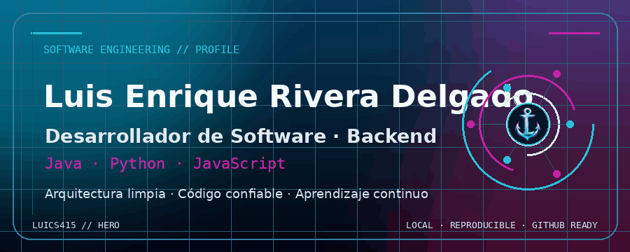
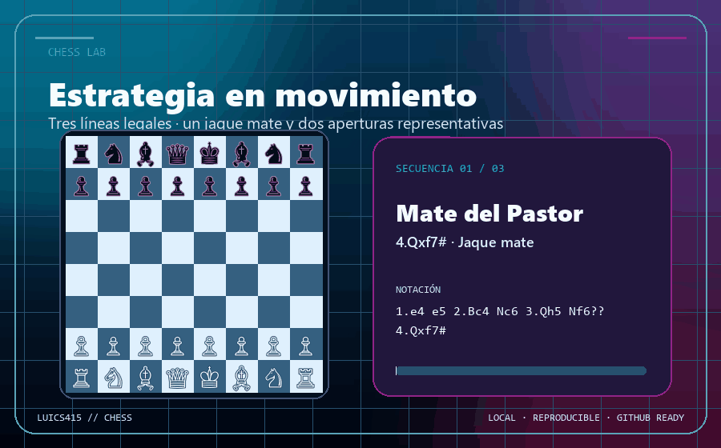
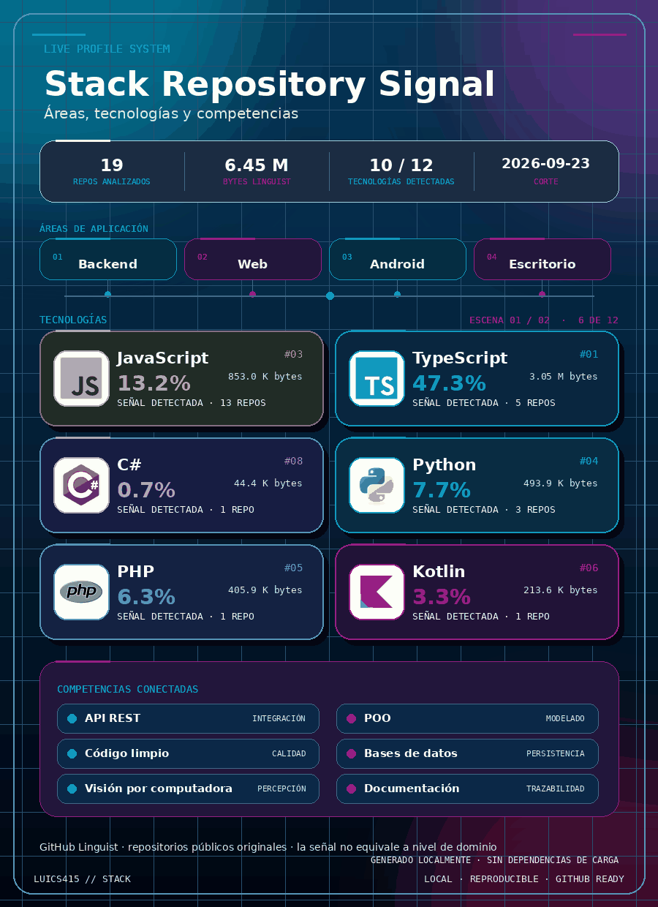
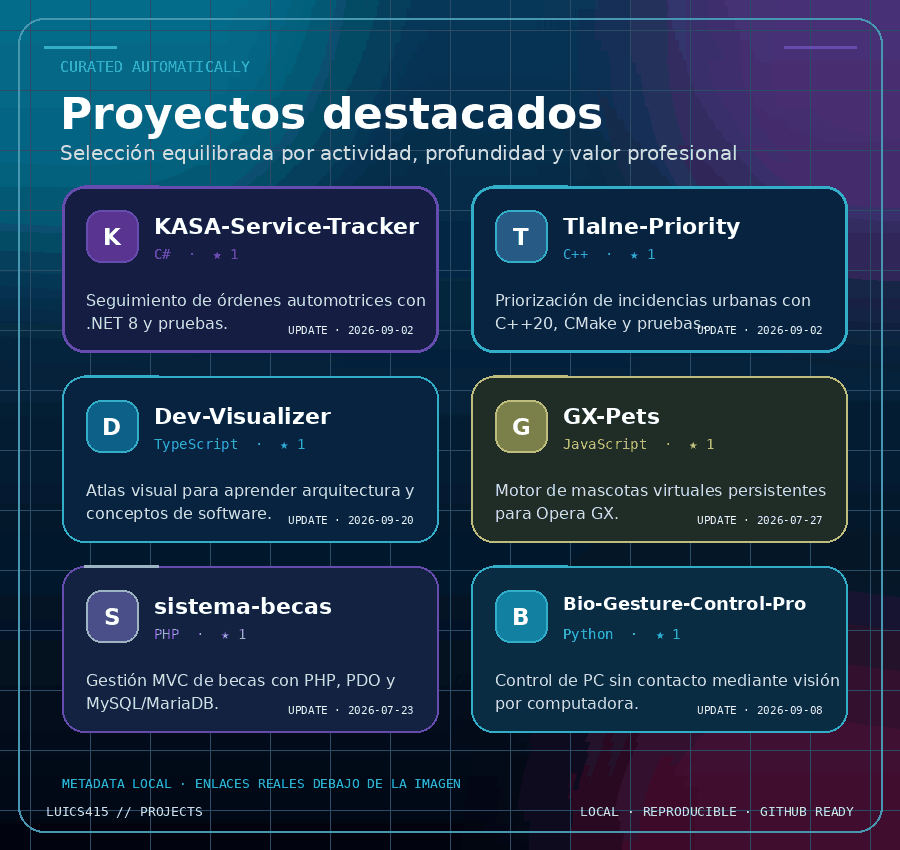
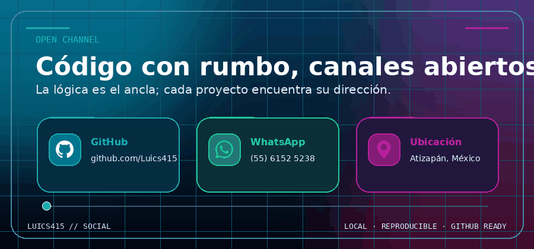

Hero

Chess

Stack Repository Signal

Projects

Social

Los SVG locales funcionan como respaldo estático y no requieren servicios externos.





Los SVG locales funcionan como respaldo estático y no requieren servicios externos.